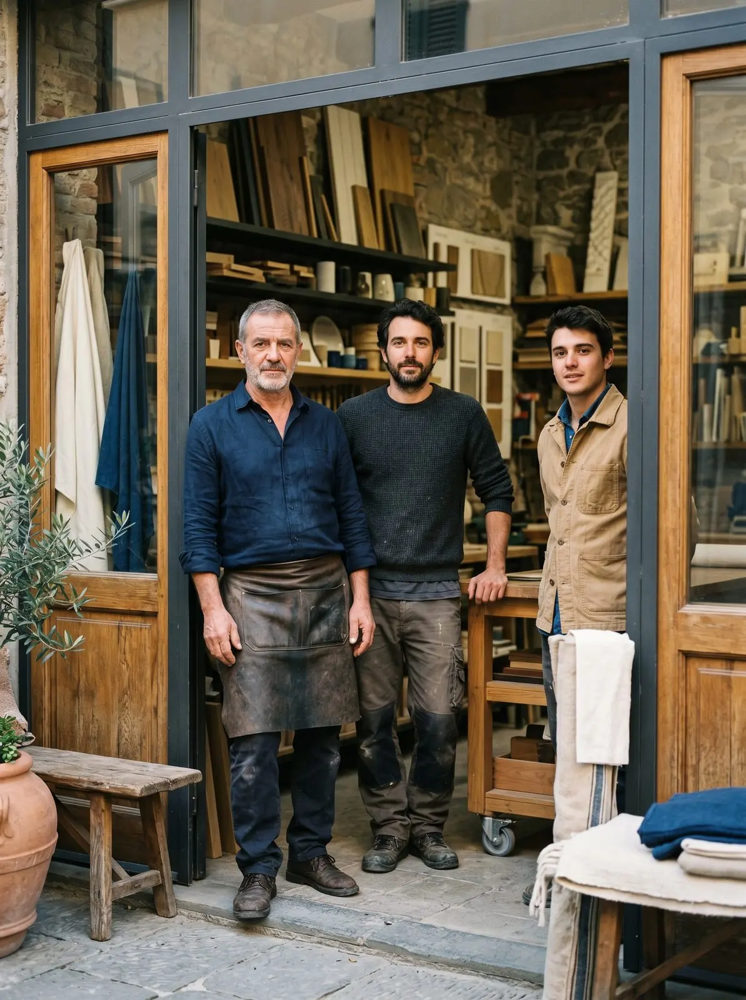

La differenza si sente dopo la vendita.
Siamo una famiglia di artigiani prima che un'azienda. Abbiamo cominciato nel 1985 e oggi lavora con noi la seconda generazione, con strumenti nuovi e lo stesso modo di fare.
Quarant’anni, in breve.
Quando si chiamava semplicemente serramenti.
Abbiamo cominciato in un'officina a Gaggiano, con poche macchine e un numero di telefono che è rimasto lo stesso. I clienti di allora ci chiamano ancora lì.
Quando molti hanno smesso di costruire.
Molti serramentisti sono diventati rivenditori: comprare finito costava meno fatica. Noi abbiamo scelto di restare produttori, perché è l'unico modo per rispondere davvero di quello che si installa.
Quando i posatori sono diventati nostri.
Abbiamo smesso di affidare la posa a squadre esterne. Oggi chi monta le tue finestre è un nostro dipendente, formato da noi, che conosce il prodotto perché lo vede nascere.
E oggi.
In azienda lavora la seconda generazione. Lo showroom in via Danimarca, 3.000 m² di officina e magazzino, una gamma che va dall'alluminio alla termofibra, i privati e gli studi di architettura. Lo stesso modo di fare.

Una sola sede. Tutto qui.
Showroom, uffici tecnici, magazzino e produzione sotto lo stesso tetto. Le persone che progettano il tuo infisso, quelle che lo costruiscono e quelle che lo montano lavorano a pochi metri l’una dall’altra.
Azienda storica e a conduzione familiare, ma che si aggiorna sempre.Barbara D. · Recensione Google
Non lavoriamo per chiudere un contratto. Lavoriamo per continuare una storia.Emanuele · titolare